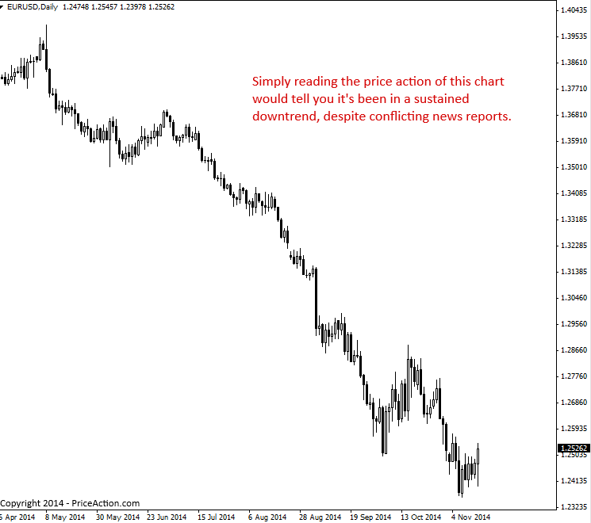

Why You Should Trade Price Action Instead of News
뉴스부터 경제 보고서, 헤지펀드나 은행 같은 대형 기관까지 시장에 영향을 미치고 시장을 움직이는 모든 요소는 가격 차트 의 원가 변동을 통해 반영됩니다 . 따라서 시장의 Price Action과 무관한 모든 변수를 분석하려고 하는 것은 불필요한 행위이며 시간 낭비일 뿐만 아니라 전체 거래 과정을 필요 이상으로 복잡하게 만듭니다.
기본 분석 대 기술적 분석
기본 분석과 기술적 분석에 대한 오랜 논쟁은 아마도 영원히 끝나지 않을 것입니다. 기본 분석 트레이더는 뉴스와 경제 데이터, 즉 "기본" 데이터만을 바탕으로 거래를 합니다. 이러한 정보를 분석하여 최상의 거래 결정을 내릴 수 있다고 믿기 때문입니다. 반면, 기술적 분석 트레이더는 가격 차트만을 바탕으로 거래 결정을 내립니다. 가격 행동 트레이더는 시장의 Price Action이나 가격 행동 만을 바탕으로 모든 거래 결정을 내리는 특정 유형의 기술적 분석 트레이더입니다 . 다른 기술적 분석 트레이더는 지표나 거래 소프트웨어 시스템 등을 사용할 수 있지만, 가격 행동 트레이더는 시장의 가격 행동만을 사용합니다.
제가 가격 액션 트레이딩을 적극 추천하고 거래하는 주된 이유는 전쟁, 날씨, 정치 등 뉴스 이벤트부터 경제 보고서까지 시장에 영향을 미치는 모든 기본 변수가 궁극적으로는 원가 차트(원시 가격 차트)의 Price Action(가격 액션)으로 반영되기 때문입니다. 따라서 저와 다른 많은 성공한 트레이더들의 의견처럼, 기본 데이터를 분석하는 것은 단순히 주의를 산만하게 하고 시간 낭비일 뿐입니다. 가격 액션은 어차피 모든 기본 데이터를 반영하기 때문에, 가격 액션을 분석하는 것만으로도 시장에 대한 모든 정보를 얻을 수 있다는 점을 고려하면 시간 낭비일 뿐입니다.
Price Action 트레이딩은 필터링되고 정제된 가장 순수한 형태의 시장 데이터를 활용하는 것이라고 생각해 보세요. 트레이더는 단순히 시장의 Price Action을 활용하려고 하기 때문에, 결국 Price Action으로 이어질 변수를 분석하기보다는 실제 Price Action을 분석하는 것이 합리적입니다. 저는 Price Action이란 옛말처럼 '말의 입에서 직접 나온' 시장 데이터를 얻는 것이라고 생각합니다.
노이즈 대 선명도
Price Action은 모든 시장 데이터를 필터링하고 시장에서 무슨 일이 일어나고 있는지 명확하게 보여줍니다. 매일 시장에 영향을 미칠 수 있는 모든 기본 변수를 분석하려고 하면 미칠 것 같습니다. 결국 잡음과 명확성의 문제가 핵심입니다. 금융 매체에는 X, Y, Z와 같은 사건이 발생할 경우 시장이 어떻게 '변화'할지에 대한 '잡음'이 넘쳐납니다. TV와 인터넷에서 말하는 전문가들의 말은 매우 전문적으로 들리지만, 결국 그들이 하는 말은 아무 의미가 없습니다. 차트가 Price Action을 통해 보여주는 것이 가장 중요하기 때문입니다.
아래 차트에서 EURUSD 시장이 2014년 5월 초부터 2015년 11월 중순까지 뚜렷한 하락세를 보였음을 확인할 수 있습니다. 차트의 원Price Action만 봐도 이 기간 동안 하락 추세가 지속되었기 때문에 가격이 계속 하락할 가능성이 높다는 것을 알 수 있습니다. 이 정보를 바탕으로 저항선에서 Price Action 반전 전략 이나 하락세 돌파 패턴을 포착 하여 하락 추세에 맞춰 거래할 수 있었습니다. 한편, 이 7개월 동안 내재 가격이 상승할 수 있다는 뉴스와 경제 보고서가 수없이 발표되었지만, 가격 하락이 지속될 수 있다는 예측도 있었습니다. 가격 차트의 원가격 데이터만 확인하면 이러한 잡음과 모순되는 데이터를 피할 수 있습니다.

결론
이 글을 읽는 모든 분이 제 의견에 100% 동의하는 것은 아닙니다. 어떤 사람들은 매일 금융 매체에서 쏟아져 나오는 정보의 양이 너무 많기 때문에 기본 데이터와 경제 뉴스를 분석해야 한다고 항상 확신할 것입니다. 하지만 어떤 것을 따르지 않으면 따르고 그것을 바탕으로 투자할지 결정해야 합니다. 모든 것을 끊임없이 혼란과 의심에 시달리게 될 것입니다.
경험 많은 트레이더라면 "모든 시장 변수가 필터링되어 단순 가격 차트에 반영된다"는 제 말을 더 잘 이해하실 겁니다. 하지만 초보자에게는 처음에는 받아들이기 어려울 수 있습니다. 하지만 제 시장 경험에 비추어 볼 때, 뉴스와 기타 기본 데이터를 맹목적으로 따른다면 결국 트레이딩 계좌를 날려버릴 수 있다는 것을 100% 확신합니다. 제 경험상 트레이더는 제한된 양의 데이터를 분석하고 이를 바탕으로 트레이딩을 진행하며, 그 데이터(Price Action)를 바탕으로 트레이딩 결정을 내려야 합니다. 모든 것에 휘둘리면 진정한 전략이나 트레이딩 우위를 갖지 못한 도박꾼이 될 뿐입니다.
Price Action에 맞춰 거래하면 시장에서 수익을 낼 수 있다고 장담할 수는 없지만, 규율과 인내심을 가지고 거래한다면 최고의 수익을 낼 수 있다는 점은 장담할 수 있습니다. Price Action을 고려한 거래는 거래 과정에서 발생하는 심리적 혼란을 상당 부분 해소하고, 현재 거래 방식과 시장의 향후 움직임을 명확하게 파악할 수 있도록 도와줍니다. 쉽지는 않겠지만, 다음에 CNBC나 블룸버그 뉴스를 보거나 외환 시장의 향후 움직임을 예측하는 '전문가'의 기사를 접하게 된다면, 그런 기사는 무시하고 차트를 통해 Price Action을 확인해야 합니다. 시장의 실제 움직임과 향후 움직임을 파악하는 가장 좋은 방법이기 때문입니다.
https://priceaction.com/price-action-university/beginners/trade-price-action-instead-of-news/